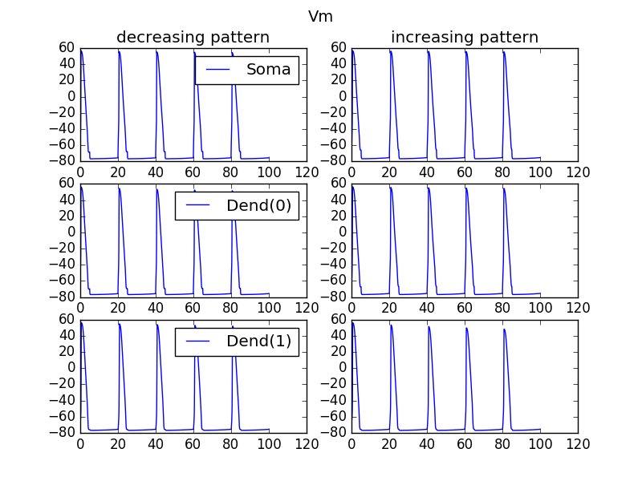
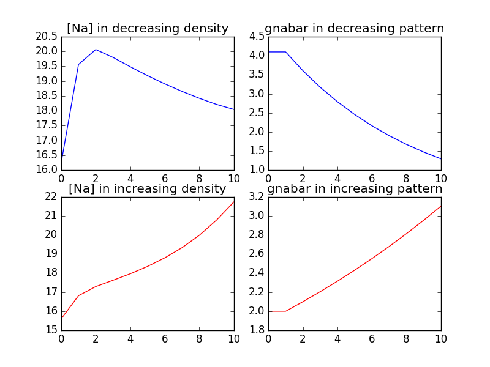
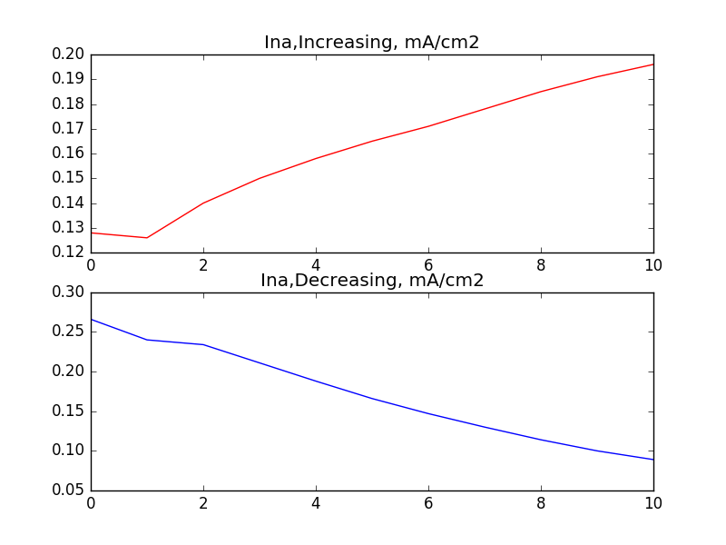

These model files are associated with the paper: Two-Photon Na+ Imaging Reports Somatically Evoked Action Potentials in Rat Olfactory Bulb Mitral and Granule Cell Neurites Tiffany Ona-Jodar, Niklas J. Gerkau, S. Sara Aghvami, Christine R. Rose, and Veronica Egger. Front. Cell. Neurosci. 11:50 2017 http://dx.doi.org/10.3389/fncel.2017.00050 These files were contributed by S. Sara Aghvami. (ipulse1.mod came from the NEURON web site). These files require the NEURON simulator which is freely available at www.neuron.yale.edu and jupyter notebooks which is freely available from jupyter.org To run the simulation on a mac download and extract this archive. Compile the mod files by cd'ing to the extracted folder and typing nrnivmodl Start the jupyter notebook by running the command: jupyter notebook Click on the GC-gna.ipynb file in your browser once the jpuyter notebook has started. You can select to run all cells from the menu items in the browser. Close each figure to see the next one and this series of figures will be generated:  The below corresponds to figure 4E in the paper:  